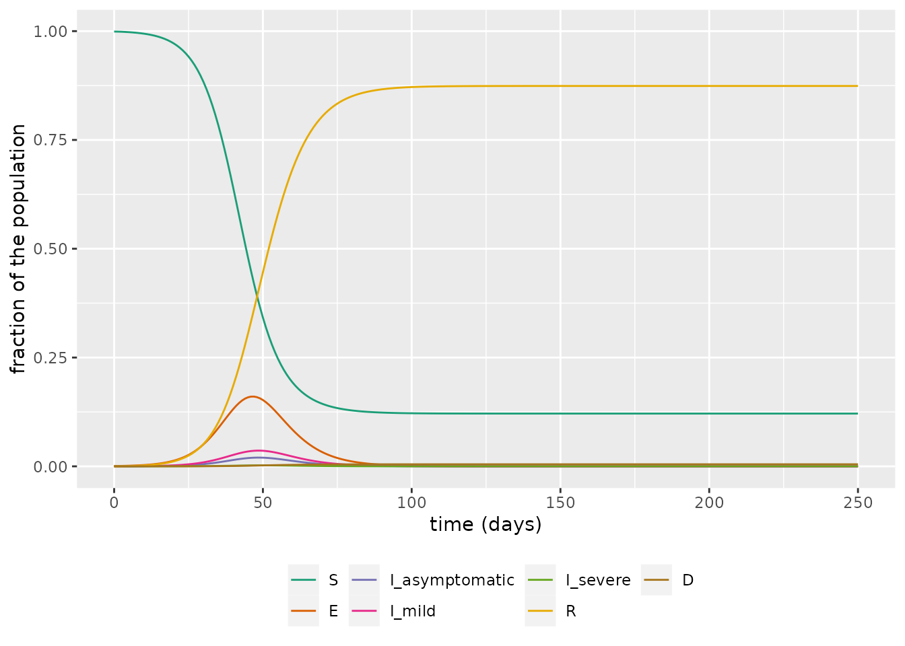
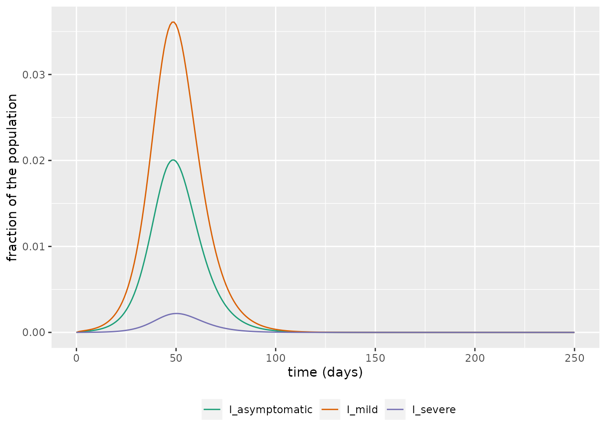
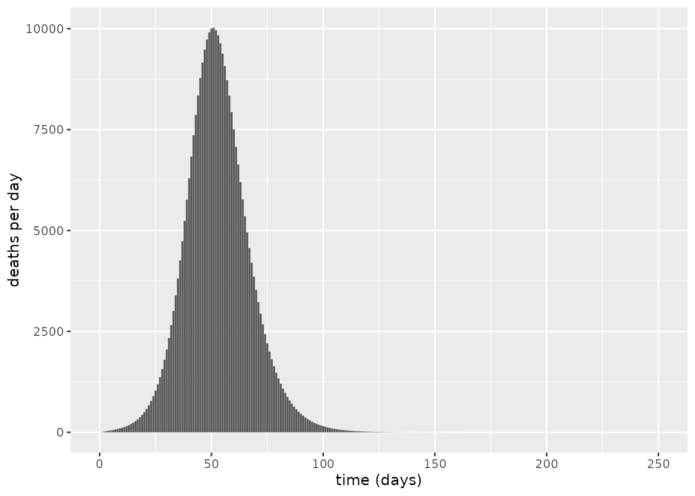
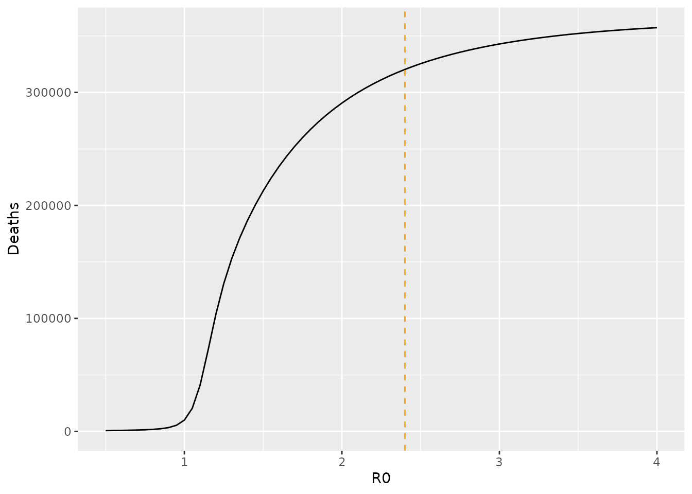
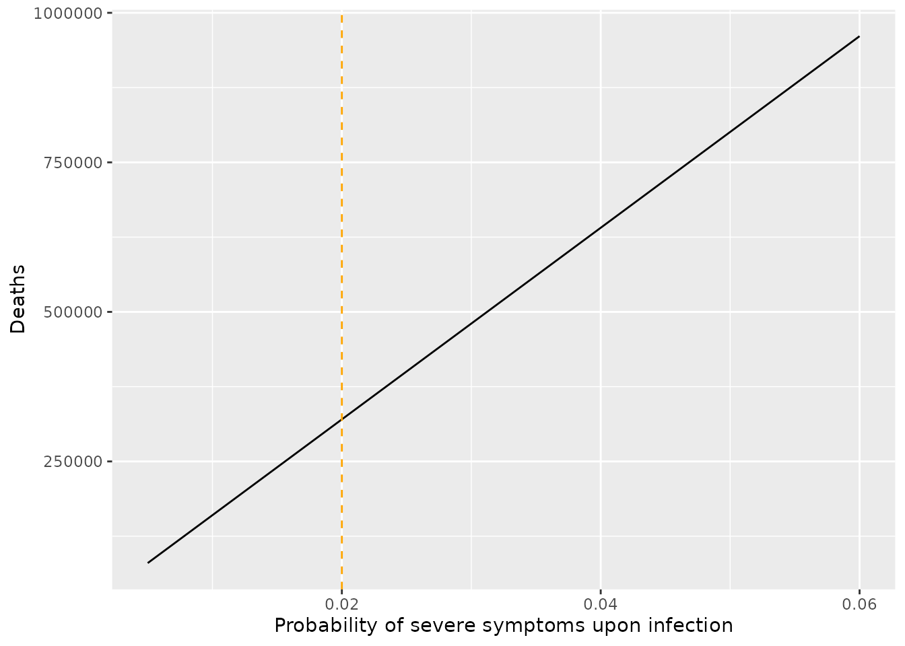

Asymptomatic, mild and severe symptom compartment model
Liangti Dai, David Seiferth, Solveig A. van der Vegt and Ben Lambert
SEIaImIsRD.RmdIntroduction
This document introduces the SEIaImIsRD model. This model is an extension of the SEIRD model where instead of having one population of infected individuals there are three, each with their own level of symptoms. In this model, populations of asymptomatic, mildly symptomatic and severely ill infectious individuals are included. The motivation for including these separate populations of infectious individuals is two-fold. First, asymptomatic individuals are much less likely to be detected and counted towards the overall case numbers than those with symptoms. Explicitly modelling this group may then lead to a more realistic depiction of the epidemic. Second, individuals with severe symptoms require treatment in hospitals and have a risk of death, whereas asymptomatic and mildly symptomatic individuals will likely recover without needing clinical care. Splitting the population of infectiousness individuals into these three groups thus allows us to estimate the burden of COVID-19 related clinical care on the healthcare system. Estimating this burden has been crucial throughout the COVID-19 pandemic, and estimates from modelling teams have, in part, motivated governments to impose a variety of interventions.
We start by introducing the equations of the model and explain how to calculate the basic reproduction number, \(R_0\). We then show how to simulate the SEIaImIsRD model using the comomodels package.
The SEIaImIsRD Model
To build the SEIaImIsRD model with three compartments of infectious individuals, we start with the basic SEIRD model. As a reminder, this model consists of a group of susceptible individuals, \(S\), who are not infected but can be if they come in contact with an infectious individual; a group of exposed individuals, \(E\), who have been infected but are not infectious yet; a group of infectious individuals, \(I\), who can infect susceptibles; a group of recovered individuals, \(R\), who are immune to reinfection; and a group of individuals, \(D\), who have died due to COVID-19 infection.
To account for the varying severity of symptoms, we take the group of infectious individuals, \(I\), and split them into three groups: asymptomatic individuals, \(I_a\); mildly symptomatic individuals, \(I_m\); and severely ill individuals, \(I_s\). Thus, this model consists of seven ordinary differential equations (ODEs) to track all groups of individuals. The severity of symptoms can affect the probability that an infectious individual dies or infects someone else, for example, an asymptomatic individual will not cough and is thus less likely to transmit their infection.
The SEIaImIsRD model thus consists of the following ODEs:
\[\frac{\text{d}S}{\text{d}t} = -S (\beta_aI_a + \beta_mI_m + \beta_aI_s),\] \[\frac{\text{d}E}{\text{d}t} = S (\beta_aI_a + \beta_mI_m + \beta_sI_s) - \kappa E,\] \[\frac{dI_{a}}{dt} = \eta_a \kappa E - (\gamma_a + \mu_a)I_a,\] \[\frac{dI_{m}}{dt} = \eta_m \kappa E - (\gamma_m + \mu_m)I_m,\] \[\frac{dI_{s}}{dt} = \eta_s\kappa E - (\gamma_s + \mu_s)I_s,\] \[\frac{\text{d}R}{\text{d}t} = \gamma_a I_a + \gamma_m I_m + \gamma_sI_s,\] \[\frac{\text{d}D}{\text{d}t} = \mu_a I_a + \mu_m I_m + \mu_sI_s,\] where, for \(i\in\{a, m, s\}\), \(\beta_i\) are the rates at which an infected individual of symptom group \(i\) infects susceptible individuals; \(\eta_i\) are the fractions of exposed individuals moving into each of the different infected groups \(i\) with \(\sum_i\eta_i=1\); \(\gamma_i\) are the rates at which individuals of symptom group \(i\) recover from the disease; and \(\mu_i\), the rates at which individuals of symptom group \(i\) die of the disease. The rate of becoming infectious when infected, \(\kappa\), is the same for all groups of infectious individuals. All parameters are non-negative.
In addition to these seven main ODEs above, the model also keeps track of the total number of cases (\(C\)) over time. Here, we define a case to be anyone infected with COVID-19, and thus the rate of appearance of new cases is given by:
\[\frac{\text{d}C}{\text{d}t} = S (\beta_aI_a + \beta_mI_m + \beta_aI_s).\] The system is closed by specifying the initial conditions \(S(0) = S_\text{init},\ E(0) = E_\text{init},\ I_a(0) = I_{a,\text{init}},\ I_m(0) = I_{m,\text{init}},\ I_s(0) = I_{s,\text{init}},\ R(0) = R_\text{init},\ D(0) = D_\text{init}\). We assume \(C_\text{init} = 0\) in the comomodels package to count only infections arising throughout a given epidemic.
With the ODEs and initial conditions specified, the system can be solved numerically to obtain the time traces \(S(t)\), \(E(t)\),\(I_a(t)\), \(I_m(t)\),\(I_s(t)\), \(R(t)\), \(D(t)\), and \(C(t)\). In the comomodels package, the populations are normalized so the total population is equal to 1, requiring that \(S(t)+E(t)+I_a(t)+I_m(t)+I_s(t)+R(t)+D(t) = 1\) for all \(t\).
Basic reproduction number
Before we numerically solve the SEIaImIsRD model, we derive an expression for the basic reproduction number, \(R_0\). The basic reproductive number is a widely used metric in epidemiological modelling and indicates whether a disease outbreak will occur. \(R_0\) represents the average number of individuals that an infectious person will infect in a population where everyone is susceptible. If \(R_0>1\), each individual typically infects more than one person, and the epidemic will likely grow. If \(R_0<1\), the epidemic will likely subside. In this section, we compute the value of \(R_0\) for the SEIaImIsRD model. For more mathematical detail on the method used, we refer the interested reader to van den Driessche (2017) and Diekmann, Heesterbeek, and Roberts (2010).
We calculate the basic reproduction number (\(R_0\)) using the next generation matrix approach. First, we select those populations in the model that contain infected individuals, i.e. those that are exposed, \(E\), or infectious, \(I_a\), \(I_m\) and \(I_s\). We define \(x = [E, I_a, I_m, I_s]\) and rewrite the ODEs of the variables in \(x\) to be of the form: \[\frac{\text{d}x_i}{\text{d}t} = \mathscr{F_i}(x) - \mathscr{V_i}(x),\] where \(\mathscr{F_i}(x)\) is the rate of appearance of new infections in compartment \(i\), and \(\mathscr{V_i}(x)\) represents the rate of all other transitions out of that compartment. For example, if we take \(E\), then \(\mathscr{F}_E(x) = S (\beta_aI_a + \beta_mI_m + \beta_sI_s)\) and \(\mathscr{V}_E(x) = \kappa E\). Considering \(I_i\), \(\mathscr{F}_i(x) = 0\) because no new infections are epidemiologically ‘’born’’ directly into the infectious compartments, and \(\mathscr{V}_i(x) = (\gamma_i + \mu_i)I_i - \eta_i \kappa E\).
This then allows us to compute the matrices \(F\) and \(V\) for all variables in \(x\): \[F=\frac{\partial \mathscr{F_i}}{\partial x_j}\Bigr|_{x^*}\hspace{5mm}\text{and }\hspace{5mm}V=\frac{\partial \mathscr{V_i}}{\partial x_j}\Bigr|_{x^*},\] where \(x^*\) represents the disease-free equilibrium for this model, where \(S=1\). For the SEIaImIsRD model, matrices \(F\) and \(V\) are: \[ F = \left(\begin{array}{cc} 0 & \beta_{a} & \beta_{m} & \beta_{s}\\ 0 & 0 & 0 & 0\\ 0 & 0 & 0 & 0\\ 0 & 0 & 0 & 0 \end{array}\right), \hspace{5mm}V = \left(\begin{array}{cc} \kappa & 0 & 0 & 0\\ -\kappa \eta_a & \gamma_a + \mu_a & 0 & 0\\ -\kappa \eta_m & 0 & \gamma_m + \mu_m & 0\\ -\kappa \eta_s & 0 & 0 & \gamma_s + \mu_s \end{array}\right). \]
The matrix \(K=FV^{-1}\) is called the next generation matrix, and its \((i,j)\)th entry is equal to the expected number of secondary infections in compartment \(i\) produced by an infected individual introduced in compartment \(j\). For the SEIaImIsRD model, it is given by:
\[ K = \left(\begin{array}{cc} \sum_i\eta_i\phi_i & \phi_a & \phi_m & \phi_s\\ 0 & 0 & 0 & 0\\ 0 & 0 & 0 & 0\\ 0 & 0 & 0 & 0 \end{array}\right),\hspace{5mm} \text{where: } \phi_i = \beta_{i} / (\gamma_i+\mu_i). \] The next generation matrix has an intuitive interpretation. Considering element \(K_{1,2}=\beta_{a} / (\gamma_a+\mu_a)\), this is the number of new infections that a single asymptomatic individual on average produces. This quantity is equal to the number of contacts per unit time, \(\beta\), times the average duration of infectiousness, \(1/ (\gamma_a+\mu_a)\). The same holds true for the other infectious compartments. The number of new infected individuals produced on average by a single infected individual is given by the \(K_{1,1}\) element: this is given by a weighted average of the numbers produced by each infectious compartment where the weights are the proportions of infected individuals flowing into the various infectious compartments. All rows apart from the first are zero because no new infections are produced that fall directly into the infectious compartments.
The basic reproduction number for the SEIaImIsRD model is then defined as \[R_0 = \rho(K^{-1}),\] where \(\rho\) denotes the spectral radius of a matrix (i.e. the largest absolute value of its eigenvalues). Due to the sparsity of this matrix, this is given by the \(K_{11}\) element:
\[ R_0 = \sum_i\eta_i \phi_i. \]
Running simulations
In this section, we walk through an example of how to use the SEIaImIsRD class, the implementation of the SEIaImIsRD model in the comomodels package. In doing so, we parameterise the model using transmission parameters meant to represent the epidemiology of COVID-19.
To create a new SEIaImIsRD object, run:
model <- SEIaImIsRD()Next, we set the initial conditions. Because the populations are normalized, the populations must sum to one, or an error will be thrown.
S <- 0.999
E <- 0.001
I_asymptomatic <- 0
I_mild <- 0
I_severe <- 0
R <- 0
D <- 0
initial_conditions(model) <- list(S = S, E = E, I_asymptomatic = I_asymptomatic,
I_mild = I_mild, I_severe = I_severe, R = R, D = D)We then set the parameter values. As with the other models, we set these parameters based on the COVID-19 pandemic. For a detailed derivation of the parameter values, see the SEIRDAge model vignette. We assume here that only individuals with severe symptoms die of the disease, i.e. \(\mu_a = \mu_m = 0\). We also assume that asymptomatic and mildly symptomatic individuals recover at approximately the same rate, but severely symptomatic individuals recover at half the rate. Approximately 35% of infected individuals will never develop symptoms, and thus belong to the asymptomatic group (Sah et al. 2021). For the delta variant of the virus, it has been estimated that the hospitalisation rate is around 2% (Twohig et al. 2021). The hospitalisation fatality rate is assumed to be 27% (Gray et al. 2021). Here, for simplicity, we assume that all infectious individuals are equally infectious which may not be unrealistic if more severe cases are more likely to be isolated from ongoing contact (either due to self isolation or entering clinical care). We set \(\beta\) so that \(R_0=2.4\) – the same as the baseline reproduction number in report 9 (Ferguson et al. 2020). To do so, we rearrange our expression above assuming \(\beta_a=\beta_m=\beta_s\):
\[ \beta = \frac{R_0}{\sum_i \eta_i / (\mu_i+\gamma_i)}. \]
p_severe <- 0.02
p_asymp <- 0.35
p_mild <- 1 - p_severe - p_asymp
eta_symptom <- list(mild = p_mild, severe=p_severe)
zeta <- 1 / 2
hfr <- 0.27
severe_vs_mild_rate <- 0.5
gamma <- list(
asymptomatic = zeta,
mild = zeta,
severe = zeta * severe_vs_mild_rate * (1 - hfr))
mu <- list(asymptomatic = 0,
mild = 0,
severe = zeta * severe_vs_mild_rate * hfr)
# incubation period of 5.5 days assumed
kappa <- 1 / 5.5
# determine beta to hit target R0
R0_target <- 2.4
p_symptoms <- c(p_asymp, p_mild, p_severe)
gamma_plus_mu <- unlist(gamma) + unlist(mu)
beta_overall <- R0_target / (sum(p_symptoms / gamma_plus_mu))
beta <- list(asymptomatic = beta_overall,
mild = beta_overall,
severe = beta_overall)
# set parameters of model
transmission_parameters(model) <- list(
beta = beta, kappa = kappa, p_symptom = eta_symptom,
gamma = gamma, mu = mu)
# check that target R0 hit
print(paste0("R0 = ", round(R0(model), 1)))
#> [1] "R0 = 2.4"Lastly, we set time span and time step for the simulation outputs. Here we choose to output results at a daily resolution. Note that the numerical solvers used to integrate the ODEs (by default, the LSODA method) typically compute the variables at many more time points for numerical accuracy. The results are returned only for the specified time points.
t <- seq(0, 250, by = 1)We can now simulate the model. We plot the evolution of \(S\), \(E\), \(I_a\), \(I_m\), \(I_s\), \(R\), and \(D\) over time.
par(mfrow=c(1,2))
# run the model
output <- run(model, t)
# plot states over time
states <- output$states
ggplot(states, aes_string(x = "time", y = "value")) +
geom_line(aes_string(colour = "compartment")) +
scale_color_brewer(palette = "Dark2") +
theme(legend.position = "bottom", legend.title = element_blank()) +
labs(x = "time (days)", y = "fraction of the population")
We then focus on in on the infectious groups and see, as expected, that the bulk of infections are in the asymptomatic and mild groups.
states %>%
filter(str_detect(compartment, "I_")) %>%
ggplot(aes_string(x = "time", y = "value")) +
geom_line(aes_string(colour = "compartment")) +
scale_color_brewer(palette = "Dark2") +
theme(legend.position = "bottom", legend.title = element_blank()) +
labs(x = "time (days)", y = "fraction of the population") We now assume a population size in the UK of 67.5m (ONS 2021) and plot the projected number of daily deaths using this model.
pop_size <- 67.5e6
output_deaths <- output$changes %>%
filter(compartment=="Deaths") %>%
mutate(value=pop_size * value)
# plot number of deaths over time
ggplot(output_deaths, aes_string(x = "time", y = "value")) +
geom_bar( stat="identity", position=position_dodge()) +
scale_fill_brewer(palette = "Dark2") +
labs(x = "time (days)", y = "deaths per day") The maximum number of daily deaths predicted by this model is approximately 10023, and overall, the number of deaths for such an unmitigated epidemic is predicted to be 320311– a value comparable to the figure of 510,000 deaths predicted in report 9 (Ferguson et al. 2020), which was produced using a more complex agent-based spatial model of COVID-19 transmission dynamics.
Sensitivity analysis
We now calculate the sensitivity of the overall number of deaths to two key parameters of the model via a local sensitivity analysis: the target \(R_0\) value; \(\eta_s\), the probability of severe symptoms. All other parameters are fixed as in the simulations above. To do so, we create a convenience function.
sensitivity_run <- function(R0_target=2.4,
eta_s=0.02) {
# instantiate model
model <- SEIaImIsRD()
# initial conditions
S <- 0.999
E <- 0.001
I_asymptomatic <- 0
I_mild <- 0
I_severe <- 0
R <- 0
D <- 0
initial_conditions(model) <- list(
S = S,
E = E,
I_asymptomatic = I_asymptomatic,
I_mild = I_mild,
I_severe = I_severe,
R = R,
D = D)
# transmission parameters
p_severe <- eta_s
p_asymp <- 0.35
p_mild <- 1 - p_severe - p_asymp
eta_symptom <- list(mild = p_mild, severe=p_severe)
zeta <- 1 / 2
severe_vs_mild_rate <- 0.5
hfr <- 0.27
gamma <- list(
asymptomatic = zeta,
mild = zeta,
severe = zeta * severe_vs_mild_rate * (1 - hfr))
mu <- list(asymptomatic = 0,
mild = 0,
severe = zeta * severe_vs_mild_rate * hfr)
# incubation period of 5.5 days assumed
kappa <- 1 / 5.5
# determine beta to hit target R0
p_symptoms <- c(p_asymp, p_mild, p_severe)
gamma_plus_mu <- unlist(gamma) + unlist(mu)
beta_overall <- R0_target / (sum(p_symptoms / gamma_plus_mu))
beta <- list(asymptomatic = beta_overall,
mild = beta_overall,
severe = beta_overall)
# set parameters of model
transmission_parameters(model) <- list(
beta = beta, kappa = kappa, p_symptom = eta_symptom,
gamma = gamma, mu = mu)
# run model
t <- seq(0, 250, by = 1)
output <- run(model, t)
pop_size <- 67.5e6
output_deaths <- output$changes %>%
filter(compartment=="Deaths") %>%
mutate(value=pop_size * value)
sum(output_deaths$value)
}First, we explore the impact of \(R_0\) (through \(\beta\)) and in each case counting the overall number of deaths. We plot \(R_0\) versus the number of deaths and obtain a sigmoidal curve, which shows the greatest sensitivity around \(1\leq R_0 \leq 1.5\). Nonetheless, if we assume an uncertainty of \(R_0=2.4\pm0.5\), we obtain a range from 279812 to 340188 deaths – a substantial variation highlighting the importance of knowing this quantity.
R0_values <- seq(0.5, 4, 0.05)
deaths <- vector(length = length(R0_values))
for(i in seq_along(deaths)) {
deaths[i] <- sensitivity_run(R0_target = R0_values[i])
}
# plot
tibble(R0=R0_values, Deaths=deaths) %>%
ggplot(aes(x=R0, y=Deaths)) +
geom_line() +
geom_vline(xintercept = 2.4, colour="orange",
linetype=2) We next consider the sensitivity of total deaths to the probability that infection results in severe symptoms. Unsurprisingly, the number of deaths strongly depends on this parameter, and the relationship is approximately linear. Supposing uncertainty given by \(\eta_s=0.02\pm 0.01\), we obtain a range from 160155 to 480466 deaths. This variation shows the critical importance of knowing the fraction of cases likely to require hospitalisation. Initial analyses hint that the Omicron variant of SARS-CoV-2 may have a lower risk of hospitalisation than the Delta variant (Ferguson et al. 2021). An issue is whether this lower rate of severe disease (if confirmed through multiple studies) will be overwhelmed by the explosive case counts reported from this variant around the world.
vals <- seq(0.005, 0.06, 0.001)
deaths <- vector(length = length(vals))
for(i in seq_along(deaths)) {
deaths[i] <- sensitivity_run(eta_s=vals[i])
}
# plot
tibble(prob_severe=vals, Deaths=deaths) %>%
ggplot(aes(x=prob_severe, y=Deaths)) +
geom_line() +
geom_vline(xintercept = 0.02, colour="orange",
linetype=2) +
xlab("Probability of severe symptoms upon infection")
References
Diekmann, Odo, JAP Heesterbeek, and Michael G Roberts. 2010. “The Construction of Next-Generation Matrices for Compartmental Epidemic Models.” Journal of the Royal Society Interface 7 (47): 873–85.
Ferguson, Neil, Azra Ghani, Wes Hinsley, Erik Volz, and Imperial College COVID-19 response team. 2021. “Report 50: Hospitalisation Risk for Omicron Cases in England.” {https://www.imperial.ac.uk/mrc-global-infectious-disease-analysis/covid-19/report-50-severity-omicron/}.
Ferguson, Neil, Daniel Laydon, Gemma Nedjati Gilani, Natsuko Imai, Kylie Ainslie, Marc Baguelin, Sangeeta Bhatia, et al. 2020. “Report 9: Impact of Non-Pharmaceutical Interventions (Npis) to Reduce Covid19 Mortality and Healthcare Demand.”
Gray, William K, Annakan V Navaratnam, Jamie Day, Pratusha Babu, Shona Mackinnon, Ini Adelaja, Sam Bartlett-Pestell, et al. 2021. “Variability in Covid-19 in-Hospital Mortality Rates Between National Health Service Trusts and Regions in England: A National Observational Study for the Getting It Right First Time Programme.” EClinicalMedicine 35: 100859.
ONS. 2021. “Overview of the UK population: January 2021.” https://www.ons.gov.uk/peoplepopulationandcommunity/populationandmigration/populationestimates/articles/overviewoftheukpopulation/january2021.
Sah, Pratha, Meagan C. Fitzpatrick, Charlotte F. Zimmer, Elaheh Abdollahi, Lyndon Juden-Kelly, Seyed M. Moghadas, Burton H. Singer, and Alison P. Galvani. 2021. “Asymptomatic Sars-Cov-2 Infection: A Systematic Review and Meta-Analysis.” Proceedings of the National Academy of Sciences 118 (34). https://doi.org/10.1073/pnas.2109229118.
Twohig, Katherine A, Tommy Nyberg, Asad Zaidi, Simon Thelwall, Mary A Sinnathamby, Shirin Aliabadi, Shaun R Seaman, et al. 2021. “Hospital Admission and Emergency Care Attendance Risk for Sars-Cov-2 Delta (B. 1.617. 2) Compared with Alpha (B. 1.1. 7) Variants of Concern: A Cohort Study.” The Lancet Infectious Diseases.
van den Driessche, Pauline. 2017. “Reproduction Numbers of Infectious Disease Models.” Infectious Disease Modelling 2 (3): 288–303. https://doi.org/10.1016/j.idm.2017.06.002.